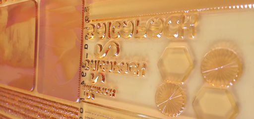

FasTuping
-

- 
Fastuping es basa principalment en un tipus de cuina tradicional, enfocada especialment per la gent jove amb l'objectiu de promoure una motivació sobre ells, a l’hora de cuinar i a la vegada fent que puguin tindre una alimentació saludable i fora d’una alimentació esporadica.r